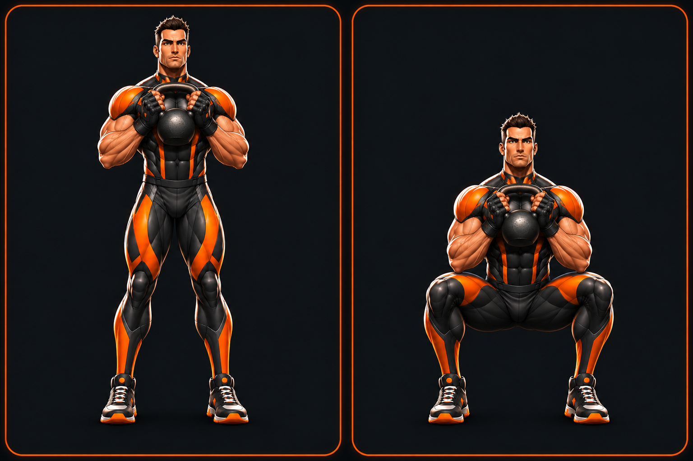

Goblet squat — first artwork sample
Pending visual approval · issue #86 · preview only
Generated sequence

Left: stand tall with the kettlebell held at your chest. Right: sit down between your heels, chest up, elbows inside the knees.
Canonical reference

Generated with built-in AI image generation using the exact canonical sheet and production male front PNG as references. Review face, costume continuity, grip, squat depth and planted feet. The sample is frontal; a three-quarter view may communicate depth better. No production artwork has been replaced.
Discovery, provenance and remaining scope